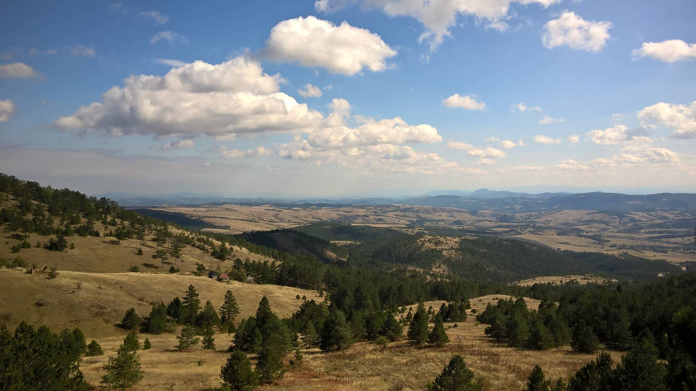
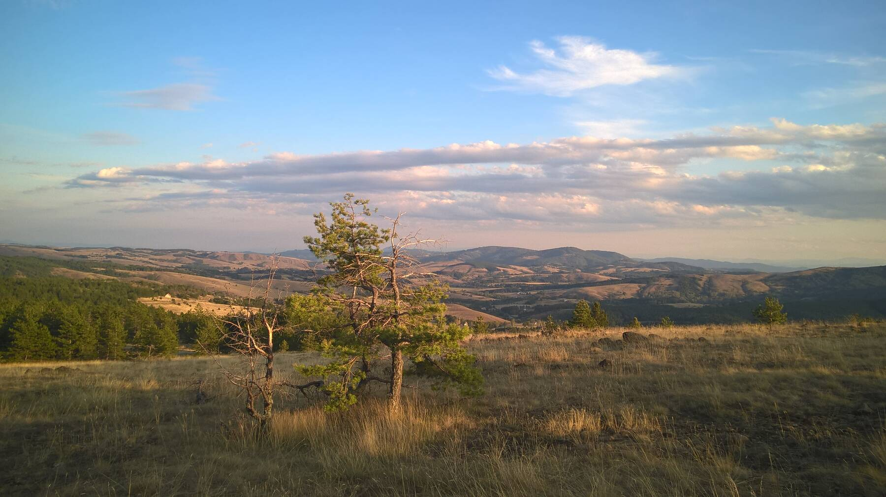
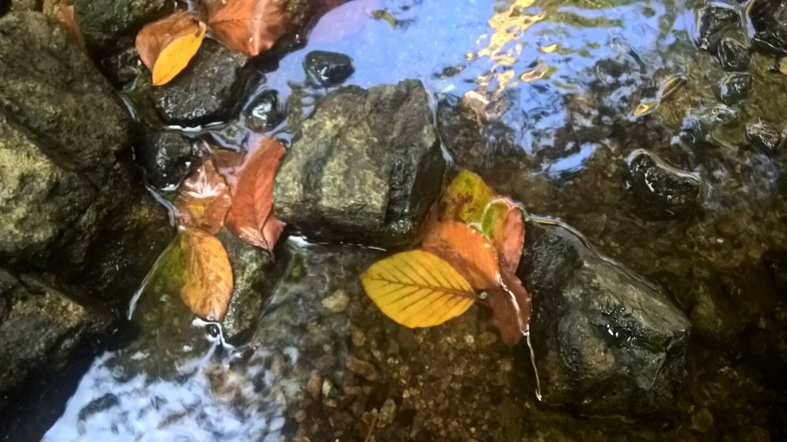
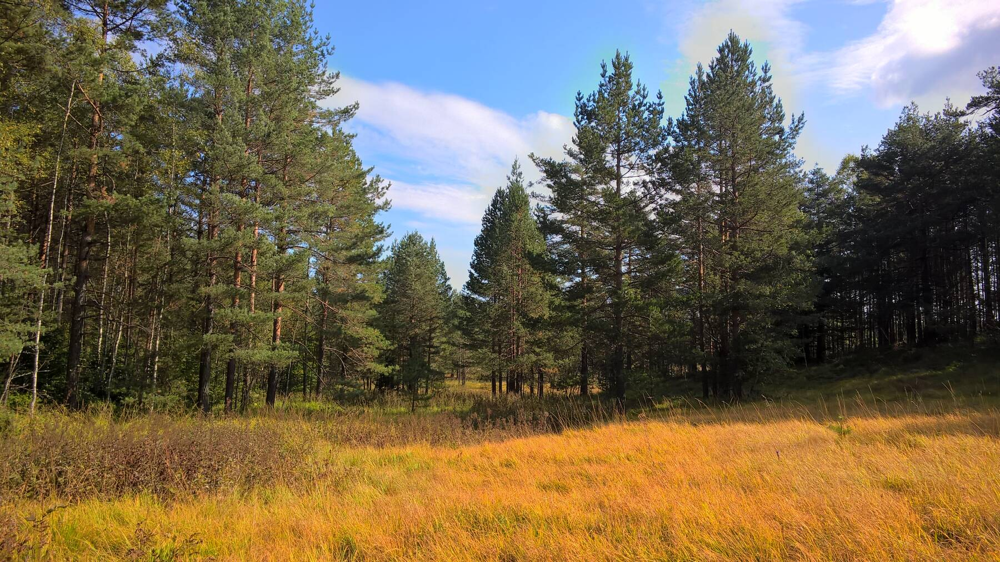
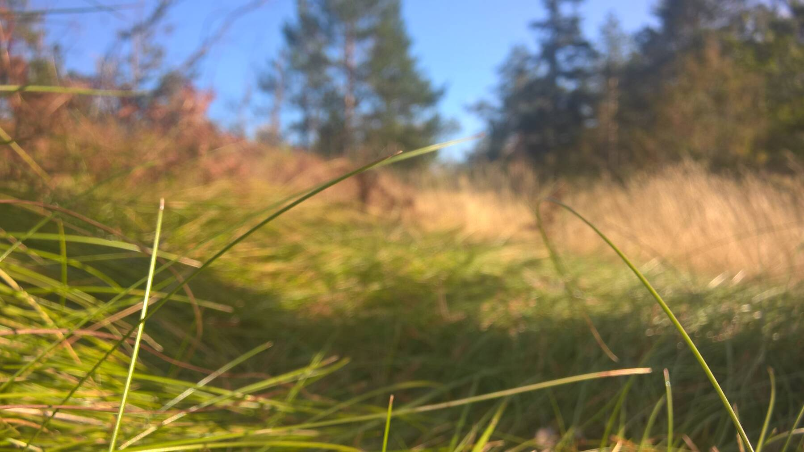

Пожалуй, любой русский человек на чужбине рано или поздно задаётся мыслью: «а не сходить ли мне в лес по грибы». В 2017-м году эта мысль пришла и в наши с Олькой головы. Как раз все ремонтные работы по дому закончились, на море мы съездили (аж два раза), отчего б за грибами не сходить. Сходили. Никаких грибов не нашли, но зато пейзажей красивых насмотрелись.

Я понятия не имею, где это. Наверное, где-то под Дивчибаре. Несколько раз предпринимали попытки найти это место, по геометкам в фотографиях, по сбивчивым воспоминаниям… Нет. Nema šansa, как говорят местные.

Очень жаль, говорю я и просто делюсь картинками. Там было красиво.


